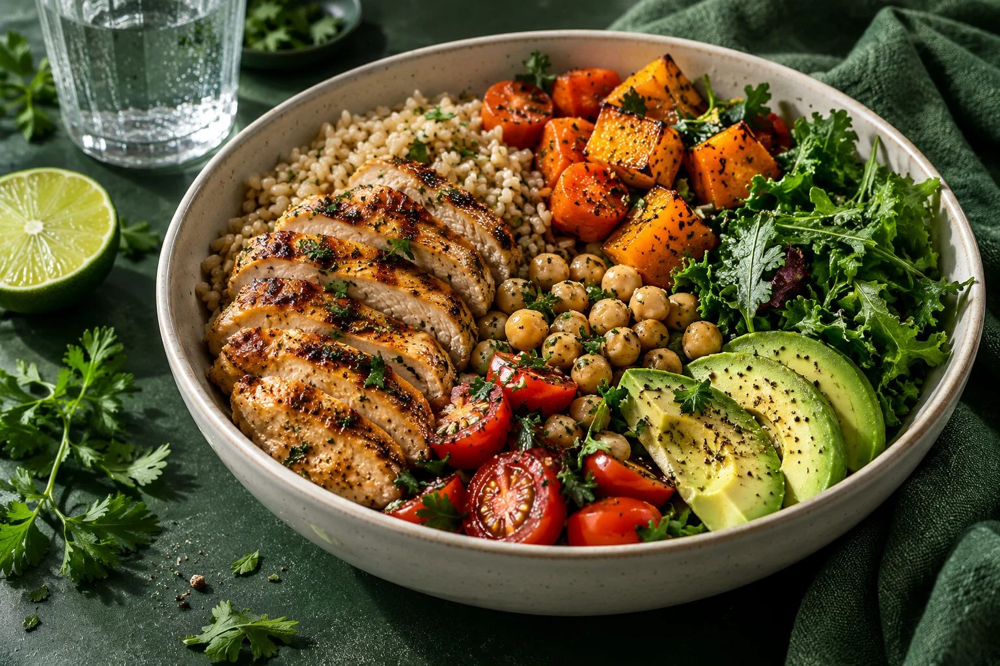

Antes do plano, você.
Uma consulta para conhecer seu histórico, entender suas necessidades e definir objetivos juntos.
NUTRIÇÃO CLÍNICA · PRESENCIAL E ONLINE
Uma alimentação que respeita seus gostos, seus objetivos e a vida que acontece fora do consultório.
Conheça o acompanhamento ↗
MENOS REGRAS IMPOSSÍVEIS
Você não precisa encaixar sua vida em uma dieta. O cuidado começa por entender como você vive.
Horários, preferências, cultura e relação com a comida fazem parte da conversa. A proposta é construir escolhas possíveis, com orientação individual e ajustes ao longo do caminho.
Uma consulta para conhecer seu histórico, entender suas necessidades e definir objetivos juntos.
Orientações e um plano alimentar que consideram sua rotina, seus gostos e o que é possível hoje.
Retornos para conversar sobre as dificuldades, acompanhar a evolução e adaptar o plano.
SEU PRÓXIMO PASSO
Atendimento para adultos, presencial ou por videochamada. Tire suas dúvidas e conheça o processo antes de agendar.
Iniciar conversa no WhatsApp ↗Helena Prado é uma personagem fictícia. O contato desta demonstração é com o Derich Studio.